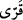
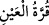
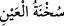

Âyette geçen “  (aydın olsun)” kelimesi “” kelimesinden türemiştir. Çünkü
göz, nefsi sevindiren bir şey görünce başkasına değil ona bakar onunla tatmin olur.
Nitekim Araplar: “” yani gönlünü razı olacağın şeye tesadüf ettir ki başkasına
gözün bakmasın derler. Ya da bu kelime “el-kurr” kelimesinden türemiştir. Bu da soğuk
demektir. Çünkü sevinç gözyaşı soğuk, üzüntü gözyaşı ise sıcak olur. Bundan dolayı
sevinilen bir şeye “”, hoşlanılmayan şeye de “” denir.
Kâşifî şöyle der: “Âyette geçen “” ifâdesi, ey Meryem çocuğunla gözün aydın
olsun anlamındadır. Ağacın yeşil olması ve meyve vermesi ise Meryem’in hâliyle
benzeşir. Şöyle ki zâtı yüce olan Hak Teâlâ kuru bir ağaçtan hurma bitirmeye kâdir
olduğuna göre babasız bir çocuğu meydana getirmeye de kâdirdir. Hak Teâlâ melekleri
gönderdi. Onlar Meryem’in etrâfına geldiler. İsa (a.s.) doğunca melekler onu tuttular ve
yıkadılar. Cennet ipeğinden bir şeye sardılar ve Meryem’in yanına koydular.
“Eğer” kim olursa olsun “insanlardan birini görürsen” eğer çocuğun hakkında sana
bir şey sorarsa ona de ki: “Ben Rahman için” kendime susmayı veya “oruç” tutmayı
“adadım” vâcib kıldım. İsrailoğulları’dan mücâhede ehlinin orucu, akşama kadar bir
şey yemekten ve konuşmaktan kendisini alıkoymaktı. Bu oruç şekli bu ümmet için
neshedilmiştir. Çünkü Hz. Peygamber (a.s.), susma orucunu yasaklamıştır.
Ebkâru’l-efkâr’da şöyle der: “Yerinde konuşmak hasletlerin en şereflisi olduğu gibi
zamanında susmak da erlerin sıfatıdır.
Gerçi akıllı adamların önünde susmak edebdir
Ama maslahat vaktinde söz söylemeğe çalışmak iyidir
Aklın perdesi iki şeydir: Söz söylememek
Söylenecek vakitte, susacak vakitte söylemek
Mücâhede erbâbının sükûtu tercih etmelerinin sebebi ise konuşmaktan nefsin zevk
aldığını, övünmeyi dışa vurduğunu ve güzel konuşmaya meylettiğini bilmelerinden
dolayıdır. Câhiliyye âdetinden olan susma (sükût) orucu ise şu hadisle yasaklanmıştır:
“Bâliğ olduktan sonra yetimlik olmaz, gün boyu geceye kadar suskun durulmaz.”[16]
Câhiliyye ehli ise bir gün ve bir gece sükût edip îtikâf yapmakla ibâdette bulunurlardı.
İslam bunu yasaklayıp hayır söylemeyi ve zikir yapmayı emretmiştir.
Fakir (Bursevî) der ki: Yasaklanan, mutlak sükûttur. Zikre devam etmekle birlikte
insanın kelamı/konuşmayı kesmesi makbûldür, hattâ emredilmiştir. Bundan dolayı
sükûta devam etmek (seyr ü sülûkte) sekiz şarttan birisi sayılmıştır. Mâsivâdan
kesilmek (inkıtâ‘) ve sülûkün faydası sükûtla ve benzerleriyle elde edilir.
“Bugün hiçbir insanla konuşmayacağım” yani ben bugün hiçbir kimse ile konuşmak
istemem. Yalnızca meleklerle söyleşip Cenâb-ı Hakk’a münâcât etmek isterim” “de!”
Bu âyetle Hz. Meryem’e işâret yoluyla nezrini haber vermesi emredilmiştir. Âyetin
mânâsı şöyledir: Bu nezri sözle değil işâretle söyle...